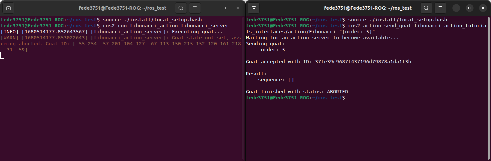
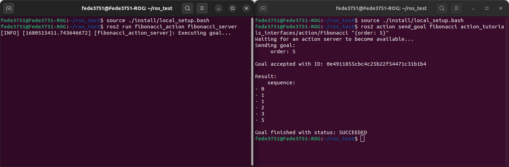
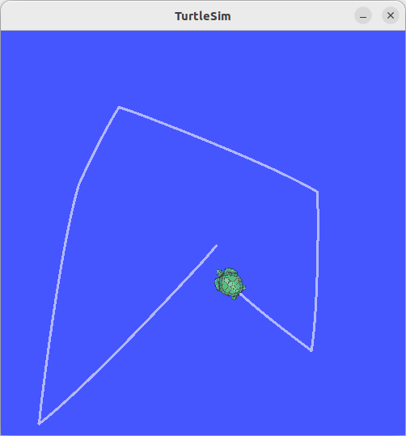
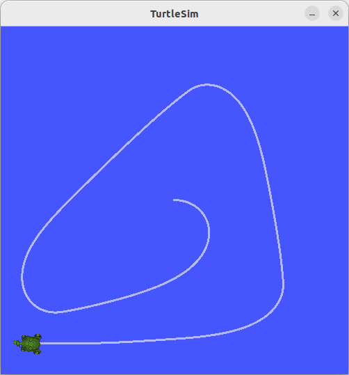
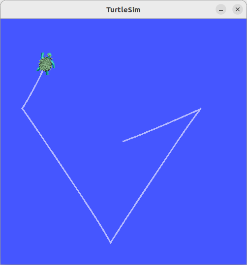

IoT Lab Lecture 4 - 05/04/2023
We're finally there! This is the final lecture in which we will cover scripting for ROS. We're finally introduing the last big component in the ROS Graph: actions!
Before doing that, we will spend a little bit of time to see how to configure a ROS Launch file, so that you can
start multiple nodes all together when you launch your project!
Let's get to it!
Creating a Launch File
The launch system in ROS 2 is responsible for helping the user describe the configuration of their system and then execute it as described.
The configuration of the system includes what programs to run, where to run them, what arguments to pass them, and ROS-specific conventions
which make it easy to reuse components throughout the system by giving them each a different configuration.
It is also responsible for monitoring the state of the processes launched, and reporting and/or reacting to changes in the state of those processes.
If you are tired of typing every time ros2 run ... for every node you have to start, this is what you've been
waiting for.
Here is the code of a simple ROS launch file, which starts two Turtlesim applications together. You can copy this script and save it in a file called turtlesim_mimic_launch.py
from launch import LaunchDescription
from launch_ros.actions import Node
def generate_launch_description():
return LaunchDescription([
Node(
package='turtlesim',
namespace='turtlesim1',
executable='turtlesim_node',
name='sim'
),
Node(
package='turtlesim',
namespace='turtlesim2',
executable='turtlesim_node',
name='sim'
),
Node(
package='turtlesim',
executable='mimic',
name='mimic',
remappings=[
('/input/pose', '/turtlesim1/turtle1/pose'),
('/output/cmd_vel', '/turtlesim2/turtle1/cmd_vel'),
]
)
])
Understanding what this launch file does should be kind of trivial at this point, but let's comment the code for a little bit.
First of all, we have our import of the Python libraries required for writing a Python launch file.
from launch import LaunchDescription
from launch_ros.actions import Node
Then, we define our function generate_launch_description, which returns a new LaunchDescription object.
The LaunchDescription object takes in input an array of ROS2 Node, which are those which will be executed when the launch file is run.
Let's look closer to one of the Node entry.
Node(
package='turtlesim',
namespace='turtlesim1',
executable='turtlesim_node',
name='sim'
),
Here, we define, the package of the node, the namespace for the node, the executable (which is the node itself), and a name for the node.One new thing that we haven't seen before, which will be of great importance for bigger projects, is the namespace.
This allows you to run multiple nodes of the same application, and divide them in different namespaces.
From the full code of the launch file you may see how two turtlesim nodes are started, and created in two different namespaces.
This allows you to start multiple instances and/or nodes of the same application, without having conflicting topics.
Note that all the Node classes can be configured at any given time and then given in input to the LaunchDescription object. Which means that you could build your Node array dinamically before (i.e., maybe depending on some arguments given in input), and then give it to LaunchDescription.
The above launch file will launch two different turtlesim applications, which can be controlled separately.
Using the cmd_vel topic, thanks to the namespaces, we can instruct the two turtles separately.
One topic will be:
/turtlesim1/turtle1/cmd_vel
And the other:/turtlesim2/turtle1/cmd_vel
The final part of the code starts the mimic node, and with these two lines:
remappings=[
('/input/pose', '/turtlesim1/turtle1/pose'),
('/output/cmd_vel', '/turtlesim2/turtle1/cmd_vel'),
]
remaps some topics of the node to different ones. This code will link the two spawned turtles together, making one turtle "mimic" another.If you want to try the Launch file we just wrote, you can use the following command:
ros2 launch turtlesim_mimic_launch.py
Changing parameters at launch
As we anticipated in the previous lecture, launch files can also be used to configure node's parameters at run time. Doing that is very simple.
The following launch file will modify the parameter of the script we wrote in the previous lecture.
from launch import LaunchDescription
from launch_ros.actions import Node
def generate_launch_description():
return LaunchDescription([
Node(
package='python_parameters',
executable='minimal_param_node',
name='custom_minimal_param_node',
output='screen',
emulate_tty=True,
parameters=[
{'my_parameter': 'earth'}
]
)
])
The lines:
output='screen',
emulate_tty=True,
That's it. Launch files have various degree of customization, more than we need at this point, and more than we would be able to cover in a single lecture.
Feel free to take a look at the offical documentation here, if you wish to customize your launcher file in a particular way.
Writing Actions
Let's now get to the final big component of the ROS Graph: actions.
Let's take a look at the example graph of a ROS action from the first lecture.

An action wraps within itself two services, and one topic.
In terms of actual code implementation, all these structures are packed inside appropriate ROS Action functions and methods, so you won't have to configure exactly
two services and one topic in your script for an action to work.
Actions are composed, just like services, of a server and a client. We will see how to implement both.
If you wish to implement your own action interface (which is usually the case, as actions are quite specific for the task they are thought for), you can create it just like for services and topics.
Writing your own action interface
The syntax for creating action interfaces is like this:
# Request
---
# Result
---
# Feedback
Let's create a package for that:
ros2 pkg create action_tutorials_interfaces
And inside of that create a folder called action.Inside of it, create a file called Fibonacci.action, and paste the following code in it:
int32 order
---
int32[] sequence
---
int32[] partial_sequence
So, just like we did in the last lecture, let's link this interface for the compiler and provide the appropriate depdendencies for it.
This should go in the CmakeList.txt file:
find_package(rosidl_default_generators REQUIRED)
rosidl_generate_interfaces(${PROJECT_NAME}
"action/Fibonacci.action"
)
And this in package.xml:
<buildtool_depend>rosidl_default_generators</buildtool_depend> <depend>action_msgs</depend> <member_of_group>rosidl_interface_packages</member_of_group>That's it. Now it's time to use this interface in our own action server and client!
Writing an action server
Let's now create a new package for our action. In your src, alongside the action_tutorial_interfaces folder, create a Python package called fibonacci_actionwith the usual command:
ros2 pkg create --build-type ament_python fibonacci_action
The code for the action server is the following. Just create a new file called fibonacci_action_server.py and write the following code in it:
import rclpy
from rclpy.action import ActionServer
from rclpy.node import Node
from action_tutorials_interfaces.action import Fibonacci
class FibonacciActionServer(Node):
def __init__(self):
super().__init__('fibonacci_action_server')
self._action_server = ActionServer(
self,
Fibonacci,
'fibonacci',
self.execute_callback
)
def execute_callback(self, goal_handle):
self.get_logger().info('Executing goal...')
result = Fibonacci.Result()
return result
def main(args=None):
rclpy.init(args=args)
fibonacci_action_server = FibonacciActionServer()
rclpy.spin(fibonacci_action_server)
if __name__ == '__main__':
main()
Let's take a look for a moment at the code we just wrote.First of all, this time we are also importing the class ActionServer along the usual libraries.
Additionally, we are also importing the interface we created before.
In the __init__() function, we are creating the ActionServer with the following lines:
self._action_server = ActionServer(
self,
Fibonacci,
'fibonacci',
self.execute_callback
)
The ActionServer class takes in input four arguments:1. A ROS 2 node to add the action client to: self.
2. The type of the action: Fibonacci (which is the interface we just created).
3. The action name: 'fibonacci'.
4. A callback function for executing accepted goals: self.execute_callback. This callback must return a result message for the action type.
The execute_callback method is defined as follows:
def execute_callback(self, goal_handle):
self.get_logger().info('Executing goal...')
result = Fibonacci.Result()
return result
Currently, this method just logs a message when the action is requested, instantiates an empty object for the result, and returns it.We can try to run this code very easily and see how it functions in the console.
Build the package, and then, once you sourced your environment, run:
ros2 run fibonacci_action fibonacci_server
On another console, you can send a message to your action server, after sourcing your environment again, like this:ros2 action send_goal fibonacci action_tutorials_interfaces/action/Fibonacci "{order: 5}"
This should output something like this:  The result from the console tells us that the action was aborted. This is because we still have not configured our goal in the callback function.Let's edit the callback action like this:
def execute_callback(self, goal_handle):
self.get_logger().info('Executing goal...')
sequence = [0, 1]
for i in range(1, goal_handle.request.order):
sequence.append(sequence[i] + sequence[i-1])
goal_handle.succeed()
result = Fibonacci.Result()
result.sequence = sequence
return result
So, we using the order value requested by the action client, we iterate over different numbers and compute the correct Fibonacci sequence.Additionally, we set the action as succesfully completed by using the method succeed() of the goal_handle object.
We then assign to the result the correct sequence and return it. Let's build the package and run it again.
The output, this time, shoud look something like this:  What if we want to provide feedback during the execution? To do that, we can modify our callback function as follows:
def execute_callback(self, goal_handle):
self.get_logger().info('Executing goal...')
feedback_msg = Fibonacci.Feedback()
feedback_msg.partial_sequence = [0, 1]
for i in range(1, goal_handle.request.order):
feedback_msg.partial_sequence.append(
feedback_msg.partial_sequence[i] + feedback_msg.partial_sequence[i-1])
self.get_logger().info('Feedback: {0}'.format(feedback_msg.partial_sequence))
goal_handle.publish_feedback(feedback_msg)
time.sleep(1)
goal_handle.succeed()
result = Fibonacci.Result()
result.sequence = feedback_msg.partial_sequence
return result
Here, we created the appropriate Feedback message, edited it in the loop, and send it to the client with the method
publish_feedback() of goal_handle.If you want to see the feedback from the console, remember to add the parameter --feedback to the action call.
Writing an action client
Let's now write an action client for our server, so that we don't have to call the action from console.
Create a new file called fibonacci_action_client.py, and write the following code in it:
import rclpy
from rclpy.action import ActionClient
from rclpy.node import Node
from action_tutorials_interfaces.action import Fibonacci
class FibonacciActionClient(Node):
def __init__(self):
super().__init__('fibonacci_action_client')
self._action_client = ActionClient(self, Fibonacci, 'fibonacci')
def send_goal(self, order):
goal_msg = Fibonacci.Goal()
goal_msg.order = order
self._action_client.wait_for_server()
return self._action_client.send_goal_async(goal_msg)
def main(args=None):
rclpy.init(args=args)
action_client = FibonacciActionClient()
future = action_client.send_goal(10)
rclpy.spin_until_future_complete(action_client, future)
if __name__ == '__main__':
main()
Here we are importing the ActionClient, alongside the usual imports.In the __init__() method, we are creating an ActionClient with three arguments:
1. The ROS node to add the action client to.
2. The interface message used for the action.
3. The name of the action.
We then configure our send_goal() function to create the goal with a given number, and use it to return the future of the request created using the function send_goal_async().
In the main function, similarly to what we did for the service client, we crete the request, and then use the function spin_until_future_complete() to wait for the request created by send_goal() to be completed.
What if we want to read the result of the action, and also get feedback for it?
For that, we will have to modify how we obtain the result of the action (spin_until_future_complete() is a blocking function, so we cannot use that if we want to do something while we wait for the result).
Let's modify the code for our client like this:
import rclpy
from rclpy.action import ActionClient
from rclpy.node import Node
from action_tutorials_interfaces.action import Fibonacci
class FibonacciActionClient(Node):
def __init__(self):
super().__init__('fibonacci_action_client')
self._action_client = ActionClient(self, Fibonacci, 'fibonacci')
def send_goal(self, order):
goal_msg = Fibonacci.Goal()
goal_msg.order = order
self._action_client.wait_for_server()
self._send_goal_future = self._action_client.send_goal_async(goal_msg, feedback_callback=self.feedback_callback)
self._send_goal_future.add_done_callback(self.goal_response_callback)
def goal_response_callback(self, future):
goal_handle = future.result()
if not goal_handle.accepted:
self.get_logger().info('Goal rejected :(')
return
self.get_logger().info('Goal accepted :)')
self._get_result_future = goal_handle.get_result_async()
self._get_result_future.add_done_callback(self.get_result_callback)
def get_result_callback(self, future):
result = future.result().result
self.get_logger().info('Result: {0}'.format(result.sequence))
rclpy.shutdown()
def feedback_callback(self, feedback_msg):
feedback = feedback_msg.feedback
self.get_logger().info('Received feedback: {0}'.format(feedback.partial_sequence))
def main(args=None):
rclpy.init(args=args)
action_client = FibonacciActionClient()
action_client.send_goal(10)
rclpy.spin(action_client)
if __name__ == '__main__':
main()
Lots of things have changed here.First of all, our action to send the goal request has been encapsulated in the method send_goal() Here, alongside the goal message, we also pass one function to the feedback_callback argument, which specifies which function will handle the feedback messages.
The function waits for the action server to be online with the function wait_for_server().
It then creates the goal future, and, instead of waiting for the result using spin_until_future_complete, it uses the function add_done_callback(), which adds a callback function to the future to be executed when it is completed (if you did exercise 3 in the previous lecture, you should have already seen this).
The goal_response_callback() method verifies if the goal gets accepted, and, if it does, it creates a new future for the action result, and adds a callback to it.
The functions get_result_callback() and feedback_callback() should be kind of self explanatory.
Finally, in the main() function, we create our node and send the request to the action server.
That's it!
With this, we have covered every single component of the ROS Graph, it's up to you to decide which best fits your project and workflow. It's time now to test everything with one final, big, exercise.
Exercise 5 - ROS Final: Patrolling Turtle
This exercise will require a lot of tinkering, and probably more time than every previous exercise.
You are here requested to create an action for the turtle, which takes in input an array of coordinates as a goal, and makes the turtle move to every coordinate given, in sequence.
The action should provide feedback everytime a coordinate is reached.
This exercise is gonna be though. Some tips that may be required to not go crazy with the ROS execution.
Your node should be multi-threaded, so that if you subscribe to a topic, you still get updates from that topic even if your code is busy waiting for something else to finish.
To do that, you should use the ROS MultiThreadedExecutor. An example on how to use it is given here:
from rclpy.executors import MultiThreadedExecutor
#...your PatrollingActionServer node here...
def main():
rclpy.init(args=args)
executor = MultiThreadedExecutor()
patrolling_action_server = PatrollingActionServer()
executor.add_node(patrolling_action_server)
executor.spin()
The best advice I can give you is to work at steps. Implement first your action to move the turtle from one point to another, and then extend it (or create a new one, it's up to you) to iterate
that action multiple times, over an array of targets.How did you do in trigonometry? Knowing how to get the right vectors between points is the key to complete this exercise.
Good luck!
Here are some examples of an execution of the patrolling action. Depending on how you decide to do it, your turtle may perform smooth paths between points, or rotate before and then move. Also not rotating at all is ok, if you are having an hard time coming up with the solution, but please bear in mind that such solution may not work if you try to move robots with wheels (which cannot move sideways), so you will eventually have to face that problem, if you plan on working with ROS in the future. 
With this exercise, we say goodbye to our beloved turtle, as we will be moving to Gazebo from the next lecture.
Solution is here!
If you still want some help but don't want the full solution, this file may help you a little math_utils.py.
Now, onto the full solution:
The file for the action interface is this one: PatrolCommandInterface.action.
The file for the action script instead: patrol_command.py.
The interface should be in a C++ package called patrol_interfaces. If you change that remember to rename it in your
action script also.
The solution is fully commented in the action file.
The script consists of two main functions: one to rotate the turtle, and one to move the turtle towards the next target.
Using the appropriate functions given in math_utils.py, we are able to compute both the angle and the distance between
the turtle current position (known by listening to the turtle1/pose), and the target position. We then send move messages to
turtle1/cmd_vel accordingly.
For the exact values of these, please refer to the solution file.
Action client is not provided. You may send a goal to your action with the following command (example with some points already set):
ros2 action send_goal /command_turtle patrol_interfaces/action/PatrolCommandInterface "targets: [{x: 9.0, y: 7.0, z: 0.0}, {x: 5.0, y: 1.0, z: 0.0}, {x: 1.0, y: 7.0, z: 0.0}, {x: 2.0, y: 9.0, z: 0.0}]" --feedback
This should move the turtle like this: Conclusions
If you made it up to this point with all the exercises done, you should start to have a really good grasp on how to approach programming robots with ROS.
One interesting topic you may want to take a look for, if you are working with complex projects in the future, is the Callback Groups,
which may be required if you have some racing conditions when working with multi-threaded implementations.
There are a lot of topics we have not covered yet, and probably won't at this point. The ROS environment is vast, and covering everything in a small course is not entirely possible.
Hopefully this first part of the course has given you enough of a solid base to tackle any problem that you will eventually face when working with ROS.
From the next lecture we will be moving to Gazebo! A powerful simulation software which allows you to test your robot-related projects in a phyisically reliable model of the real world environment.
There are still some interesting tools in the ROS environment that we have not seen and may introduce later on (i.e. lidar scanners map and live camera feeds),
we will come back to them if needed.
Gazebo is a completely independent program from ROS, but just like ROS, uses topics to pass information between the models in its simulation.
Piloting a robot inside Gazebo is as simple as moving our turtle (with the added complexity of a third component in the movement space),
all we need to do is bridge the topics from Gazebo to ROS, and that will do the trick! This is what we will do in the next lecture!
See you soon!